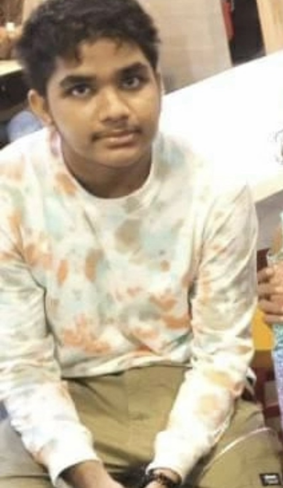

Kaif Mausoom, Developer / Maldives Chess Club Representative
Chess improvement shouldn’t be a guessing game.
Students should know where they are, where they need to improve, and what they can do next. This platform was built to make chess development more transparent, more personal, and more accessible.